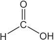
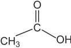
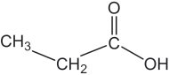
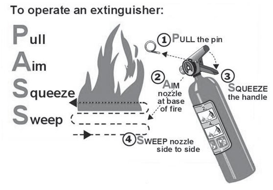

ഇവിടെ മീതെയ്≥ ത≥മാത്രയിലെ ഒരു ഹൈഡ്രജ≥ ആ‰ം മാറി ആ ÿാനസ്ഥ് ക്ലോറി≥ ആ‰ം
വന്നുചേരുകയ√േ ചെøുന്നത്?
ഈ പ്രക്രിയ തുടയ്യന്നാലോ?
ഘന്തം 2, 3, 4 എന്നിവ യഥാക്രമം പൂയ്യസ്ഥിയാത്ഥൂ.
മീതെയ്≥ ക്ലോറിനുമായി രാസപ്രവയ്യസ്ഥന-സ്ഥിൺ ഏയ്യ∏െടുബ്ബോƒ ഘന്തം ഘന്തമായി ഓരോ ഹൈഡ്രജ≥ ആ‰-സ്ഥെയും മാ‰ി പകരം ക്ലോറി≥ ആ‰ം വന്നു
ചേരുക-യാണ് ചെøുന്നത്. തൺഫല-മായി ഇഒ3ഇഹ (ക്ലോറോമീതെയ്≥), ഇഒ2ഇഹ2
(ഡൈക്ലോറോമീതെയ്≥), ഇഒഇഹ3 (ട്രൈക്ലോറോമീതെയ്≥), ഇഇഹ4 (ടെട്രാക്ലോറോമീതെയ്≥) എന്നീ സംയു-‡-ത്മളുടെ മിശ്രിതം ഉ≠ാകുന്നു. ഇസ്ഥരം പ്രവയ്യസ്ഥനത്മളെ ആദേശ രാസപ്രവയ്യസ്ഥന-ത്മƒ എന്ന് പറയുന്നു.
ഒരു സംയു-‡-സ്ഥിലെ ഒരു ആ‰സ്ഥെ മാ‰ി അതി‚െ ÿാനസ്ഥ് മ‰ൊരു
ആ‰മോ ആ‰ം ഗ്രൂ∏ോ വന്നു ചേരുന്ന രാസപ്രവയ്യസ്ഥന-ത്മളാണ് ആദേശ
രാസപ്രവയ്യസ്ഥന-ത്മƒ.
$
ഈതീനിൺ കായ്യബച്ച ˛ കായ്യബച്ച ദ്വിബ-'-നമു-≈-തുകൊ≠് ഇത് ഒരു
അപൂരിത സംയു-‡-മാണ് എന്ന് അറിയാമ√ോ?
അപൂരിത സംയു-‡-ത്മƒ രാസപ്രവയ്യസ്ഥന-സ്ഥിൺ ഏയ്യ∏െടുബ്ബോƒ അവ
പൂരിത -സംയു-‡-ത്മƒ ആകാ≥ ശ്രമിത്ഥും.
πാല്ലിക് മാലിന്യത്മƒ ഇസ്ഥര-സ്ഥിൺ താപീയ വിഘടനം നടസ്ഥി ലഘുവായ ത∑ാത്രകളാത്ഥി മാ‰ാ≥ കഴിയും. മലിനീക-രണം നിയഗ്ല്രിത്ഥാ≥
ഒരു പരിധിവരെ ഇത് സഹായിത്ഥുന്നു.
ഹൈഡ്രോകായ്യബണുക-ളുടെ രാസപ്രവയ്യസ്ഥന-ത്മളുമായി ബ'-∏െന്ത പന്തികകളാണ് ചുവടെ നൺകിയിരിത്ഥുന്നത്.
പന്തിക 7.3, 7.4 ഇവ പൂയ്യസ്ഥിയാത്ഥൂ.
→
....................
ഇഒ3ഇഹ + ഇഹ2
→
.................... + ഒഇഹ
....................
→
ഇഒ4 + ....................
→
....................
→
ഇഛ2 + ഒ2ഛ
പന്തിക 7.3
അ, ആ, ഇ എന്നീ കോളത്മളിൺ നിന്നും അനുയോജ്യമായവ ക≠െസ്ഥി
ചേയ്യസ്ഥെഴുതൂ.
(അ)
അഭികാര-കത്മƒ
(ആ)
ഉൺ∏-ന്നത്മƒ
(ഇ)
രാസപ്രവയ്യസ്ഥന-സ്ഥി‚െ പേര്
ഇഒ3−ഇഒ3 + ഇഹ2
ഇഛ2 + ഒ2ഛ
അഡീഷ≥ രാസപ്രവയ്യസ്ഥനം
ഇ2ഒ6 + ഛ2
ഇഒ2=ഇഒ 2
താപീയ വിഘടനം
ഇഇഒ2=ഇഒ2
ഇഒ2=ഇഒ2 + ഇഒ4
ആദേശരാസപ്രവയ്യസ്ഥനം
ഇഒ3−ഇഒ 2−ഇഒ3
ഇഒ3−ഇഒ2ഇഹ + ഒഇഹ
പോളി-െമറൈസേഷ≥
ജ്വലനം
പന്തിക 7.4
ചില പ്രധാന ഓയ്യഗാനിക് സംയു-‡-ത്മƒ
ഇനി ചില ഓയ്യഗാനിക് സംയു-‡-ത്മƒ പരിച-യ-∏െടാം.
1. ആൺത്ഥഹോളുകƒ (അഹരീവീഹ)െ
ര≠് സംയു-‡-ത്മƒ നൺകിയിരിത്ഥുന്നത് ശ്ര≤ിത്ഥൂ.
ഇഒ 3- ഛഒ
ഇഒ3-ഇഒ 2- ഛഒ
125
Page 54
Figure fig_ch07_p054_01 (Page 54)
രസതഗ്ല്രം $ ല്ലാ‚േയ്യഡ് - ത
ഈ ര≠് സംയു-‡-ത്മളുടേയും കഡജഅഇ നാമം എഴുതാമ√ോ?
ഇതിൺ മെതനോളിനെ വുഡ് സ്പിരി‰് (ണീറ ഉെശൃശ)േ എന്നും എതനോളിനെ
ഗ്രേയ്പ് സ്പിരി‰് (ഏൃമുല ഉെശൃശ)േ എന്നും വിളിത്ഥുന്നു. −ഛഒ ഫങ്ഷണൺ
ഗ്രൂ∏ുക-ളു≈ കായ്യബണിക സംയ്‡-ത്മളാണ് ആൺത്ഥഹോളുകƒ.
എതനോളി‚െ വ്യാവസായിക നിയ്യമാണം
പഞ്ചസാര- നിയ്യമാണ സമയസ്ഥ് പഞ്ചസാര ക്രില്ലലുകƒ ശേഖരിണ്ണശേഷം
അവശേഷിത്ഥുന്ന പഞ്ചസാര അടത്മിയ മാതൃദ്രാവ-കമാണ് (ങീവേലൃ ഹശൂൗീൃ)
മൊളാ- സ സ് (ങീഹമലൈ)െ. ഇതിനെ നേയ്യ∏ിണ്ണ ശേഷം യീല്ല് ചേയ്യസ്ഥ്
ഫെയ്യമ‚േഷ≥ നടസ്ഥിയാണ് എതനോƒ നിയ്യമിത്ഥുന്നത്. യീല്ലിലു≈
126
Page 55
Figure fig_ch07_p055_01 (Page 55)

Figure fig_ch07_p055_02 (Page 55)

Figure fig_ch07_p055_03 (Page 55)

Figure fig_ch07_p055_04 (Page 55)
ഓയ്യഗാനിക് സംയു-‡-ത്മളുടെ രാസപ്രവയ്യസ്ഥന-ത്മƒ
ഇ≥വെയ്യന്തേസ്, സൈമേസ് എന്നീ എ≥സൈമുക-ളുടെ സാന്നിധ്യസ്ഥിൺ ഇത്
ഏതാനും ദിവസ-ത്മƒത്ഥകം എതനോƒ ആയി മാറുന്നു.
ഇ12ഒ22ഛ11 + ഒ2ഛ ഇ≥വെയ്യന്തേസ് ഇ6ഒ12ഛ 6 + ഇ6ഒ12ഛ 6
•ൂത്ഥോസ്
സുക്രോസ് (പഞ്ചസാര)
ഇ 6 ഒ 12 ഛ 6
സൈമേസ്
ഫ്രക്ടോസ്
2ഇ2ഒ5-ഛഒ + 2ഇഛ2
എതനോƒ
ഇതിൺ 8 - 10% വരെ എതനോƒ അടത്മിയിരിത്ഥും. ഇത് വാഷ് എന്നറിയ∏െടുന്നു. വാഷിനെ അംശിക സേ്വദനം നടസ്ഥി 95.6% വീര്യമു≈ എതനോƒ അഥവാ റക്‰ിഫൈഡ് സ്പിരി‰് (ഞലരശേളശലറ ഉെശൃശ)േ നിയ്യമിത്ഥുന്നു.
മദ്യപാന-സ്ഥിനുവേ≠ി ദുരുപ-യോഗ-∏െടുസ്ഥാതിരിത്ഥാ≥ വ്യവസായിക ആവശ്യസ്ഥിനു≈ എതനോളിൺ വിഷപ-ദായ്യഥത്മƒ ചേയ്യത്ഥാറു≠്. ഈ ഉൺ∏ന്നസ്ഥെ ഡിനേണ്ണേയ്യഡ് സ്പിരി‰് (ഉലിമൗേൃലറ ഉെശൃശ)േ എന്ന് പറയുന്നു. വിഷപദായ്യഥമായി മെതനോƒ ചേയ്യസ്ഥാൺ ലഭിത്ഥുന്ന ഉൺ∏-ന്നമാണ് മെതിലേ‰ഡ് സ്പിരി-‰് (ങലവേ്യഹമലേറ ഉെശൃശ)േ. 99% സ്ഥിലധികം ശു≤-മായ എതനോƒ
അബ്സല്യൂന്ത് ആൺത്ഥഹോƒ (അയീെഹൗലേ മഹരീവീഹ) എന്നാണ-റിയ-∏െടുന്നത്.
അബ്സല്യൂന്ത് ആൺത്ഥഹോളും പെട്രോളും ചേയ്യന്ന മിശ്രിതമായ പവയ്യ
ആൺത്ഥഹോƒ (ജീംലൃ മഹരീവീഹ) വാഹന-ത്മളിൺ ഇ'-നമായി ഉപയോഗിത്ഥുന്നു. ല്ലായ്യണ്ണ് അടത്മിയ വസ്തുത്ഥളായ ബായ്യലി, അരി, മരണ്ണീനി മുതലായവ-യിൺ നിന്നും എതനോƒ നിയ്യമിത്ഥാറു≠്.
സോ∏്
പാമി‰ിക് ആസിഡ്, ല്ലിയറിക് ആസിഡ്, ഒലിയിക് ആസിഡ് മുതലായ
ഫാ‰ി ആസിഡുകളും •ിസറോƒ എന്ന ആൺത്ഥഹോളും ചേരുബ്ബോƒ
ഉ≠ാകുന്ന എല്ലറുക-ളാണ് എവ്വകളും കൊഴു-∏ുക-ളും. എവ്വകളും കൊഴു∏ുകളും ആൺത്ഥലിക-ളുമായി പ്രവയ്യസ്ഥിത്ഥുബ്ബോƒ ലഭിത്ഥുന്ന ലവണ-ത്മളാണ് സോ∏്. സാധാര-ണയായി ഇതിന് ഉപയോഗിത്ഥുന്ന ആൺത്ഥലികളാണ് സോഡിയം ഹൈഡ്രോക്സൈഡും പൊന്താസ്യം ഹൈഡ്രോക്സൈഡും. വ്യാവസായിക-മായി സോ∏് നിയ്യΩിത്ഥുന്ന പ്രക്രിയ-യിൺ (ഒീ
ഏുൃീരല)ൈ ഉപോൺ∏-ന്നമായി ലഭിത്ഥുന്ന •ിസറോƒ ഔഷധ-ത്മƒ, സൗμര്യ
വയ്യ≤ക വസ്തുകƒ തുടത്മി ഒന്തേറെ പദായ്യഥത്മƒ നിയ്യമിത്ഥാ≥ ഉപയോഗിത്ഥുന്നു.
സോ∏് നിയ്യമിത്ഥാം:
ഒരു ബീത്ഥറിൺ 40 ആഘ ജലമെടുസ്ഥ് അതിൺ 18 ഗ്രാം സോഡിയം
ഹൈഡ്രോക്സൈഡ് (കാല്ല-ിക് സോഡ) ലയി-∏ിത്ഥുക. ലായനിയെ
തണുത്ഥാ≥ അനുവ-ദിത്ഥുക. 100 ഗ്രാം വെളിണ്ണെവ്വ ഈ ലായനിയിലേത്ഥ് അല്പാല്പമായി ചേയ്യസ്ഥ് ഇളത്ഥുക. ഉ≠ാകുന്ന സോ∏ിനെ
അണ്ണുക-ളിൺ ഒഴിണ്ണ് കന്തിയാകാ≥ അനുവ-ദിത്ഥുക. സോ∏് ഉ≠ാത്ഥാ≥
ആവശ്യമായ വസ്തുകƒത്ഥ് പുറമേ വയ്യവ്വവ-സ്തുത്ഥƒ, സുഗ'
ദ്രവ്യത്മƒ ഇവ ചേയ്യത്ഥുബ്ബോƒ വ്യത്യസ്ത നിറസ്ഥിലും ഗ'-സ്ഥിലുമുളള സോ∏് ലഭിത്ഥുന്നു.
സോ∏് അഴുത്ഥ് നീത്ഥം ചെøുന്നത് എത്മനെയെന്ന് നോത്ഥാം. സോ∏ിന്
എവ്വക-ളിൺ ലയിത്ഥുന്ന ഒരു നോച്ചപോളായ്യ അഗ്രവും ജലസ്ഥിൺ ലയിത്ഥുന്ന ഒരു പോളായ്യ അഗ്രവും ഉ≠്. സോ∏ിലെ ഹൈഡ്രോകായ്യബച്ച
ഭാഗം എവ്വയിൺ ലയിത്ഥുകയും അയോണിക ഭാഗം (പോളായ്യ ഭാഗം)
129
Page 58
Figure fig_ch07_p058_01 (Page 58)
രസതഗ്ല്രം $ ല്ലാ‚േയ്യഡ് - ത
ജലസ്ഥിൺ ലയിത്ഥുകയും ചെøുന്നു. അതിനാൺ സോ∏ി‚െ സാന്നിധ്യസ്ഥിൺ
അഴുത്ഥിനെ എളു∏ം നീത്ഥം ചെøാ≥ കഴിയുന്നു. കൂടാതെ ജലസ്ഥിൺ സോ∏്
ചേയ്യത്ഥുബ്ബോƒ അതി‚െ പ്രതല-ബലം കുറയുകയും തുണി നന്നായി നനയുകയും ചെøുന്നു. ജലസ്ഥിനും അഴുത്ഥിനും ഇടയിൺ സോ∏് ഒരു കവ്വിയായി പ്രവയ്യസ്ഥിണ്ണ് അഴുത്ഥിനെ നീത്ഥം ചെøുന്നു.
ഡി‰യ്യജ‚ ്
സോ∏ുകളെ∏ോലു≈ ശുചീകാരിക-ളാണ് ഡി‰യ്യജ‚ുകƒ. ഇവയ്ത്ഥും
സോ∏ിനെ പോലെ എവ്വക-ളിൺ ലയിത്ഥുന്ന ഒരു നോച്ചപോളായ്യ ഭാഗവും
ജലസ്ഥിൺ ലയിത്ഥുന്ന ഒരു പോളായ്യ ഭാഗവും ഉ≠്. കോƒ, പെട്രോളിയം
ഇവയിൺ നിന്ന് ലഭിത്ഥുന്ന ഹൈഡ്രോകായ്യബണുക-ളിൺ നിന്നാണ് ഡി‰യ്യജ‚ുകƒ നിയ്യമിത്ഥുന്നത്. മിത്ഥ ഡി‰യ്യജ‚ുകളും സƒഫോണിക് ആസിഡി‚െ
ലവണ-ത്മളാണ്.
ഒരു പ്രവയ്യസ്ഥനം ചെയ്തു നോത്ഥാം.
ഒരു ടെല്ല് ട്യൂബിൺ 10 ആഘ ഡില്ലിൺഡ് വാന്തറും മ‰ൊന്നിൺ തുല്യ അളവ്
കഠിന ജലവും എടുത്ഥുക. ര≠ിലും ഏതാനും തുളളി സോ∏് ലായനി
ചേയ്യസ്ഥ് നന്നായി കുലുത്ഥുക. ര≠് ടെല്ല് ട്യൂബുക-ളിലും ഒരേ അളവ് പതയു-≠ാകുന്നു≠ോ? ഏത് ടെല്ല് ട്യൂബിലാണ് കൂടുതൺ പതയു-≠ാകുന്നത്?
നിത്മളുടെ നിഗമനം എഗ്ലാണ്?
മ‰ൊരു പരീക്ഷണം കൂടി ചെøാം.
ര≠് ടെല്ല് ട്യൂബുക-ളിൺ 10 ആഘ വീതം കഠിന-ജല-മെടുത്ഥുക. ഒന്നിൺ
ഏതാനും തു≈ി സോ∏് ലായനിയും ര≠ാമ-സ്ഥേതിൺ തുല്യ അളവ്
ഡി‰യ്യജ‚ ് ലായനിയും ചേയ്യത്ഥുക. ര≠് ടെല്ല് ട്യൂബുകളും നന്നായി കുലുത്ഥുക. എഗ്ലാണ് നിരീക്ഷണം? ഏത് ടെല്ല് ട്യൂബിലാണ് കൂടുതൺ പത
ഉ≠ാകുന്നത്?
കഠിന ജലസ്ഥിൺ സോ∏് നന്നായി പതയുന്നി-√. ജലസ്ഥി‚െ കാഠിന്യസ്ഥിന്
കാരണം അതിൺ അടത്മിയിന്തുളള ചില കാ'്യം, മന്മീഷ്യം ലവണ-ത്മളാണ്.
ഈ ലവണ-ത്മƒ സോ∏ുമായി പ്രവയ്യസ്ഥിണ്ണ് അലേയ സംയു-‡-ത്മƒ ഉ≠ാകുന്നതാണ് പത കുറയാ≥ കാരണം. എന്നാൺ ഡി‰യ്യജ‚ുകƒ ഈ ലവണത്മളുമായി- പ്രവയ്യസ്ഥിണ്ണ് അലേയ സംയു-‡-ത്മƒ ഉ≠ാത്ഥുന്നി-√. അതിനാൺ
കഠിന ജല- സ്ഥ ഇൺ ഡി‰യ്യജ‚ു- ക ƒ സോ∏ി- ഏന- ത്ഥ ആƒ ഫല- ്രപ- ദ - മ ആ- ണ ് .
ഇതുപോലെ ഡി‰യ്യജ‚ുകƒ അസിഡിക് ലായനിക-ളിലും ഉപയോഗിത്ഥാ≥
കഴിയുന്നു.
എന്നാൺ ഡി‰യ്യജ‚ുക-ളുടെ അമിത ഉപയോഗം പാരി-ÿിതിക പ്രശ്നത്മƒത്ഥ്
കാരണ-മാകുന്നു. ഡി‰യ്യജ‚ ് കണത്മളെ ജലസ്ഥിലെ സൂക്ഷ്മ ജീവികƒത്ഥ്
എളു-∏-സ്ഥിൺ വിഘടി-∏ിത്ഥാ≥ കഴിയി-√. അതുകൊ≠് തന്നെ ജലസ്ഥിൺ
എസ്ഥുന്ന ഡി‰യ്യജ‚ുകƒ ജലജീവിക-ളുടെ നിലനിൺപ് അപക-ടസ്ഥിലാത്ഥുന്നു. ഉദാഹ-രണ-സ്ഥിന് ഫോസ്ഫേ‰് അടത്മിയ ഡി‰യ്യജ‚ുകƒ ആൺഗകളുടെ വളയ്യണ്ണ ത്വരിത-∏െടുസ്ഥുകയും ജലസ്ഥിലെ ഓക്സിജ‚െ അളവ് പരിമിത-∏െടുസ്ഥുകയും ചെøുന്നു. ഇത് ജലജീവിക-ളുടെ ശ്വസന-സ്ഥിനുളള
ഹൈഡ്രോകായ്യബ- ണ ഉ- ക - ള ഉടെ വിവിധ രാസ- ്രപ- വ യ്യസ്ഥ- ന - ത്മ ƒ
നിത്മƒത്ഥ് പരിചിത-മാണ-√ോ. നിത്യജീവിത-സ്ഥിൺ ഇവ ഉപയോഗിത്ഥ-∏െടുന്ന സμയ്യഭത്മƒ ക≠െസ്ഥുക.
2.
എതനോളി‚െ വിവിധ ഉപയോഗ-ത്മƒ ലില്ല് ചെøുക. എതനോƒ
ബിവറേജായി ഉപയോഗിത്ഥുബ്ബോƒ രാസപ-രമായി ഇതു മനുഷ്യശരീര-സ്ഥിന് ഉ≠ാത്ഥുന്ന ദോഷവ-ശത്മളും ഇതു-≠ാത്ഥുന്ന സാമൂഹ്യ
പ്രശ്നത്മളും ചേയ്യസ്ഥ് ഒരു പ്രബ'ം തയാറാത്ഥുക.
3.
നിത്മƒത്ഥ് സോ∏ു-≠ാത്ഥാന-റിയാമ√ോ? വിവിധ നിറസ്ഥിലും മണസ്ഥിലുമു≈ സോ∏ു-≠ാത്ഥാ≥ ശ്രമിത്ഥൂ. സോ∏ി‚െ രസത-ഗ്ല്രസ്ഥെത്ഥുറിണ്ണ് ഒരു ചെറുകുറി∏് തയാറാത്ഥുക.
131
Page 60
Figure fig_ch07_p060_01 (Page 60)
രസതഗ്ല്രം $ ല്ലാ‚േയ്യഡ് - ത
കുറി-∏ുകƒ
132
Page 61
Figure fig_ch07_p061_01 (Page 61)
ഓയ്യഗാനിക് സംയു-‡-ത്മളുടെ രാസപ്രവയ്യസ്ഥന-ത്മƒ
കുറി-∏ുകƒ
133
Page 62
Figure fig_ch07_p062_01 (Page 62)
രസതഗ്ല്രം $ ല്ലാ‚േയ്യഡ് - ത
കുറി-∏ുകƒ
134
Page 63
Figure fig_ch07_p063_01 (Page 63)

Figure fig_ch07_p063_02 (Page 63)
സുരക്ഷയ്ക്കായി അഗ്നിശ-മനികൾ
അഗ്നിശ-മനിക-ളുടെ സിലണ്ടറുകൾ ഓഫീസുക-ളിലും കെട്ടിട-ങ്ങളിലും
തിയേറ്ററുക-ളിലും നിങ്ങൾ കണ്ടിരിക്കുമ-ല്ലോ. ഇവയെ എങ്ങനെ ഉപയോഗിക്കാം എന്ന് നോക്കാം. കത്തുന്ന വസ്തുക്കളുടെ അടിസ്ഥാനത്തിൽ തീ അഞ്ചായി തരം തിരിച്ചിരിക്കുന്നു.
ക്ലാസ് അ - സാധാരണ തീ പിടിക്കുന്ന പദാർഥങ്ങളായ പേപ്പർ,
മരം, പ്ലാസ്റ്റിക്, തുണിത്തര-ങ്ങൾ എന്നിവ കത്തുമ്പോൾ ഉണ്ടാകുന്ന തീ.
ക്ലാസ് ആ - ദ്രാവക-ങ്ങളായ പെട്രോളിയം ഉൽപന്നങ്ങൾ കത്തുമ്പോൾ ഉണ്ടാകുന്ന തീ
ക്ലാസ് ഇ - പ്രവർത്തിക്കുന്ന ഇലക്ട്രിക്കൽ ഉപക-രണ-ങ്ങളിൽ
നിന്നുണ്ടാകുന്ന തീ.
ക്ലാസ് ഉ - മഗ്നീഷ്യം, സോഡിയം, ലിതിയം, പൊട്ടാസ്യം തുടങ്ങിയ കത്തുന്ന ലോഹങ്ങളിൽ നിന്നുണ്ടാകുന്ന തീ.
ക്ലാസ് ഗ - പാചകം ചെയ്യാൻ ഉപയോഗിക്കുന്ന എണ്ണകൾ കത്തുമ്പോൾ ഉണ്ടാകുന്ന തീ.
വിവിധ തരം തീ അണയ്ക്കുവാൻ ഒരേ ഇനം അഗ്നിശമനികൾ ഉപയോഗിക്കുവാൻ പാടില്ല. ഏത് തരം തീയ്ക്കാണ് ഉപയോഗിക്കേണ്ടത്
എന്ന്ള്ളത് അഗ്നിശ-മനിക-ളിൽ രേഖപ്പെടുത്തിയിരിക്കും.
അഗ്നിശ-മനി -പ്രവ-ർത്തിപ്പിക്കേണ്ട രീതി
$ സിലിണ്ടറിന്റെ മുകളിൽ ഹാൻഡിലിൽ ഉള്ള പിൻ വലിക്കുക.
$ അണയ്ക്കേണ്ട തീയിലേയ്ക്ക് നോസിൽ തിരിക്കുക.
$ ഹാൻഡിൽ അമർത്തിപ്പിടിയ്ക്കുക.
$ തീയിൽ ഇഛ കിട്ടുന്ന രീതിയിൽ വീശുക.
2